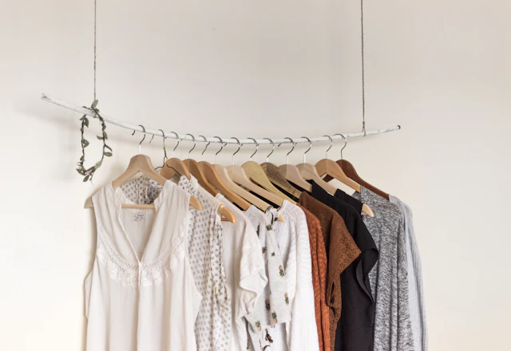
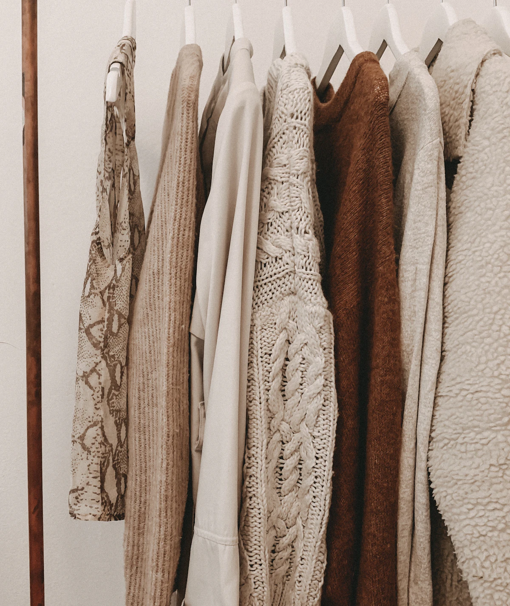
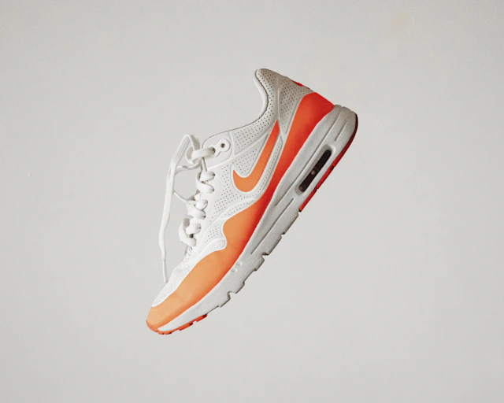
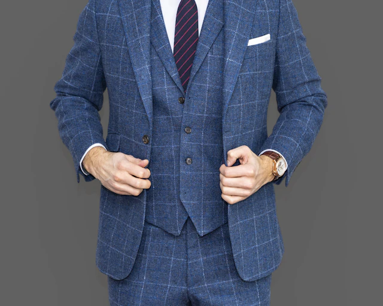
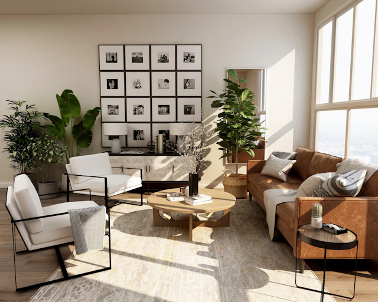
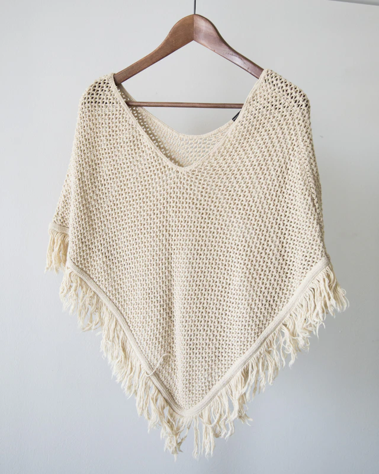

01
Повседневная одежда
от 450 ₽Рубашки, брюки, трикотаж. Свежесть для вещей, с которыми проходит каждый день.
Подробнее об уходеБережный уход за вещами · Киров
Профессиональный уход за одеждой,
обувью и домашним текстилем.

01 / Что нам можно доверить
У каждой вещи свой характер.
Для каждой — подходящий уход.

Рубашки, брюки, трикотаж. Свежесть для вещей, с которыми проходит каждый день.
Подробнее об уходе
Пальто, куртки и пуховики. Внимание к форме, фактуре и особенностям наполнителя.
Подробнее об уходе
Любимые кроссовки и кожаные пары. Подбор чистки с учётом каждого материала.
Подробнее об уходе
Костюмы, шёлк и сложные ткани. Уход, который начинается с внимательного осмотра.
Подробнее об уходе
Пледы, одеяла и шторы. Свежесть для маленьких деталей большого домашнего уюта.
Подробнее об уходе02 / Предварительный расчёт
Добавьте несколько вещей в расчёт.
Без звонков и сложных формул.
Пока не выбрано ни одной вещи
Нажмите «+» напротив нужной вещи в прайсе — стоимость появится здесь.
Демонстрационные цены. Не оферта.
Окончательная стоимость — после осмотра.
| Вещь / уход | Стоимость от | Количество |
|---|---|---|
| РубашкаХлопок, лён, смесовые ткани | 450 ₽ | |
| БрюкиПовседневные и классические | 600 ₽ | |
| СвитерШерсть и смесовый трикотаж | 700 ₽ | |
| ПлатьеУход с учётом ткани и отделки | 950 ₽ | |
| Костюм, 2 предметаПиджак и брюки / юбка | 1 400 ₽ | |
| ПальтоШерсть и смесовые материалы | 1 500 ₽ | |
| КурткаБез пухового наполнителя | 1 200 ₽ | |
| ПуховикНатуральный или синтетический пух | 1 700 ₽ | |
| Кроссовки, параТекстиль и комбинированные материалы | 900 ₽ | |
| Кожаная обувь, параГладкая кожа, без реставрации | 1 100 ₽ | |
| ПледСтандартный размер, до 2 × 2 м | 1 100 ₽ | |
| ОдеялоСтандартное двуспальное | 1 400 ₽ |
Окончательная стоимость зависит от материала, размера, отделки и степени загрязнения. Расчёт ориентировочный и не является предложением действующей химчистки.
Можно добавить до 20 единиц каждой позиции. Для штор и нестандартных изделий нужен индивидуальный расчёт.
03 / Всё устроено просто
Пять понятных шагов.
Никакой лишней суеты.
Рассказываете о вещи и выбираете нужный уход.
Способ передачи согласовывается при оформлении.
Изучаем материал, обсуждаем стоимость и ограничения.
Подбираем технологию для конкретного изделия.
Знакомитесь с результатом и рекомендациями по уходу.
Сроки и условия согласовываются после осмотра.
Начать с заявки
04 / Наш подход
Бывает пальто, в котором вы встречаете осень. Костюм для важного дня. Плед, под которым уютно. Мы понимаем эту разницу.
05 / Разницу видно
Передвиньте разделитель, чтобы посмотреть, как устроено сравнение «до и после».
Визуальная демонстрацияЭто не результат работы компании. «До» смоделировано цифровым слоем загрязнений на одной фотографии.
Подобрать уход для обуви
06 / Слова, которые важны
Ниже — три вымышленных отзыва.
Только примеры оформления,
не реальные отзывы клиентов.
Для меня важно, чтобы о любимом пальто заботились, а не просто принимали в чистку. В таком сервисе хочется видеть внимание к мелочам.Пример оформления
Удобно сначала прикинуть стоимость, а потом оставить короткую заявку. Не нужно разбираться в длинных прайсах и звонить ради каждого вопроса.Пример оформления
Пледы и одеяла — отдельная история. Хорошо, когда можно заранее обсудить материал, размер и уход, а не гадать, что получится после чистки.Пример оформления
07 / Давайте проясним
Чтобы доверить вещь, важно понимать, как за ней будут ухаживать.
Задать свой вопросЧасто стандартный уход занимает от 2 до 5 рабочих дней. Деликатные материалы, сложные пятна и крупный текстиль могут потребовать больше времени. Это общий ориентир, а не срок этого демонстрационного бренда. Точную дату согласовывают после осмотра изделия.
Многие деликатные изделия подходят для профессионального ухода, но решение принимается по составу, маркировке и состоянию вещи. Шёлк, шерсть, клеевые элементы и сложная отделка требуют отдельной оценки. Иногда безопасная чистка невозможна — об этом важно узнать до начала работ.
Базовая цена зависит от типа изделия. При осмотре учитывают материал, размер, отделку, наполнитель и загрязнения. Цены и калькулятор на этом сайте демонстрационные: окончательная стоимость должна быть согласована специалистом до чистки.
Правила приёма зависят от конкретной химчистки. Предварительная заявка помогает уточнить возможность ухода, передачу вещей и загрузку специалистов. На этом демонстрационном сайте запись и отправка данных не подключены.
Следуйте маркировке производителя, проветривайте вещь перед хранением и используйте подходящие плечики. Не храните одежду долго в транспортировочном пластике. Обувь сушите вдали от нагревателей. Индивидуальные рекомендации зависят от материала и проведённого ухода.
08 / Начнём с вашей вещи
Расскажите, какой уход нужен.
Всё важное можно указать в одной заявке.
Бережно к вашим вещам.
Внимательно к вам.
«ЧИСТО» — вымышленный бренд. Сейчас форма только проверяет поля: данные не отправляются и не сохраняются. Не вводите реальные персональные данные для тестирования.
На связи · Киров
Контакты не подключены.
Адрес и график появятся перед реальным запуском.